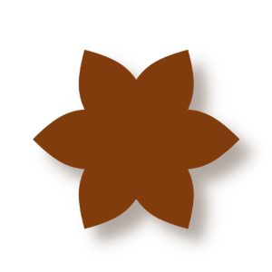
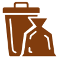

POR UM CENTRO-OESTE SUSTENTÁVEL!

MAS, POR QUE E PRA QUE SER SUSTENTÁVEL?
FUTURO
Quando adotamos hábitos mais sustentáveis e evitamos destruir o meio ambiente, garantimos a disponibilidade de recursos naturais no futuro.
QUALIDADE DE VIDA
Uma vida com atitudes saúdaveis é beneficioso para o corpo e para mente.
ECONOMIA
Ter hábitos sustentáveis ajuda o seu bolso, pois reduzindo o consumo a conta reduz também.
CO+V SIGNIFICA: CENTRO-OESTE MAIS VERDE

CASA
AGRO-ECO
LIXO
DOE E ADOTE
LAZER
ALIMENTAÇÃO
Centro-Oeste apresenta a maior intensidade de consumo de água atualmente, com cerda de 1600 litros para cada R$ 1 gerado na região.
O consumo per capita no centro-oeste é de 2.357 kWh/hab.

A quantidade de lixo coletado no centro-oeste vária de 2k a 7k de toneladas por dia.
Quer ter um melhor controle do seu consumo e economizar com as contas?
Baixe nosso App!
DISPONIVEL PARA ANDROID E iOS